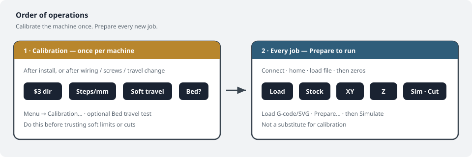
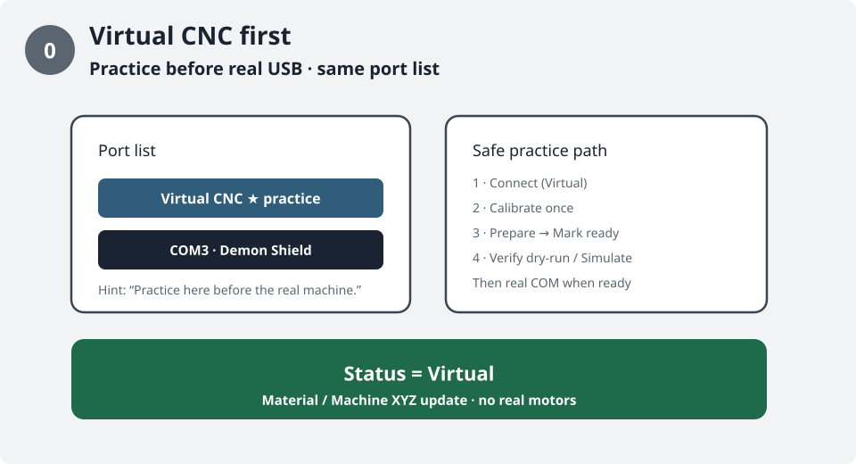
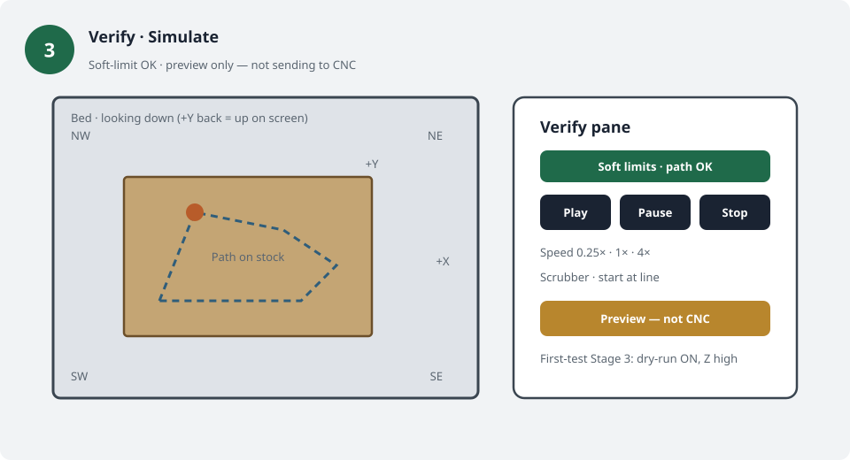
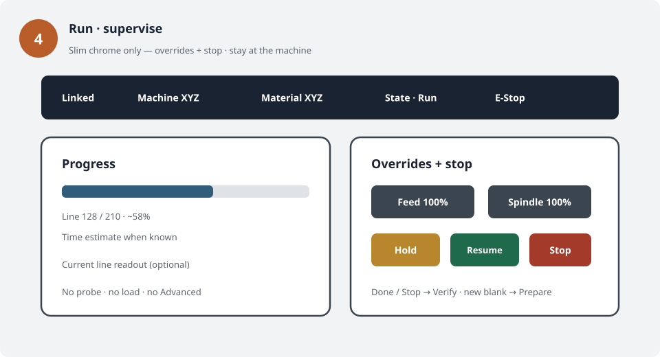

Assembly-style instructions
Visual setup
SharpCNC walks one job at a time: Connect → Calibrate → Prepare → Verify → Run. Practice on Virtual CNC before real USB. Aligns with first-test stages (air → scrap). For Chris’s Demon Shield + GRBL machine only — other CNCs are out of scope.


0 · Connect Every session · Virtual CNC or COM · Linked Open the chat line. Practice on Virtual first; real COM when ready. First-test Stage 1 = link only. 1 · Calibrate
Once per machine · $3 · steps/mm · soft travel · Home · bed test
Machine tune-up. Make “1 mm” mean one real millimeter — then skip
to Prepare next session. Stage 2 air jog trusts this.
1 · Calibrate
Once per machine · $3 · steps/mm · soft travel · Home · bed test
Machine tune-up. Make “1 mm” mean one real millimeter — then skip
to Prepare next session. Stage 2 air jog trusts this.
 2 · Prepare
Stock · Material XYZ · Z probe · load · Mark ready
Job setup. Place this board, mark Material origin, load the
drawing — every cut needs this.
2 · Prepare
Stock · Material XYZ · Z probe · load · Mark ready
Job setup. Place this board, mark Material origin, load the
drawing — every cut needs this.

3 · Verify Soft limits · Simulate · checklist · Start Last look before metal. Dress rehearsal on screen, then Start. Stages 3–4 Start from here.
4 · Run Progress · feed/spindle % · Hold / Stop Slim supervise chrome. Watch the cut; override or stop. Stay at the machine.Fresh install bootstrap: First-run wizard (connect → home → into Calibrate). Prefer Virtual CNC for the first pass. Text: Connect · Calibrate · Prepare · Verify & Run · First-test stages